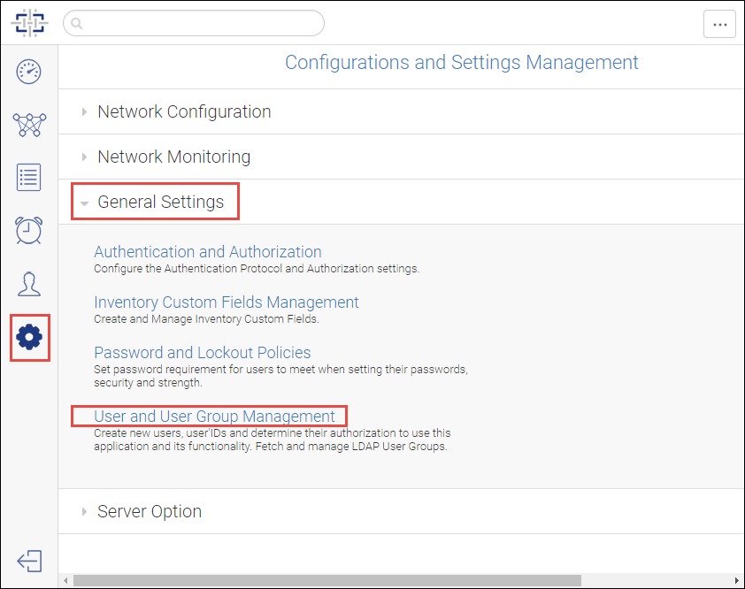
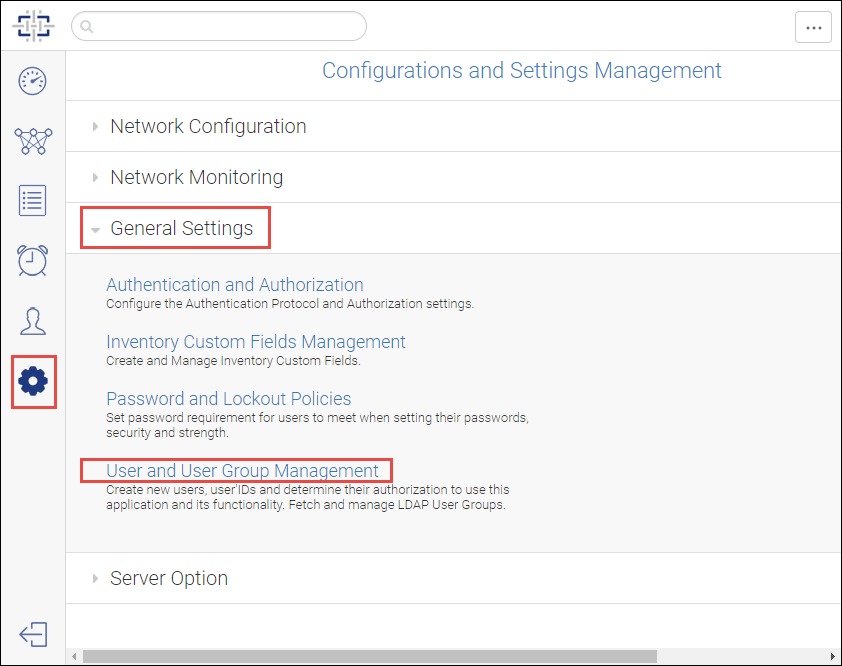
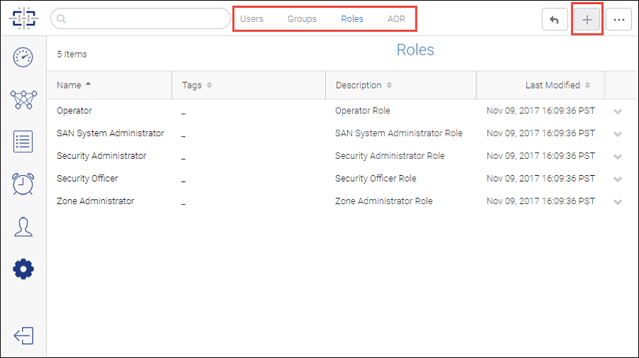
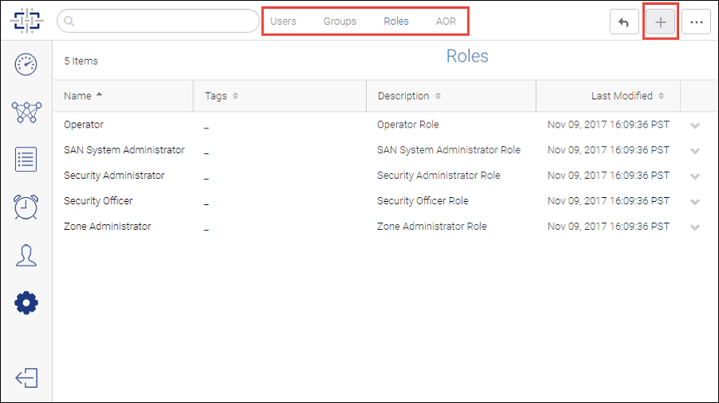

Configure Roles, AORs, and Users
Several pre-defined roles are supplied by the system. You can create additional customized roles to fit your needs.
If you create customized roles and areas of responsibility (AORs). do this first, before adding users. Then when you add the users, you can assign them the customized roles and AORs.
-
Click the
Settings icon (
 ), and then select
.
Figure 15 User and User Group Management selection
), and then select
.
Figure 15 User and User Group Management selection -
Click the
Roles tab at the top of the page, and then click the
Add button (
 ) in the top right corner to add new roles.
Figure 16 Roles page
) in the top right corner to add new roles.
Figure 16 Roles page